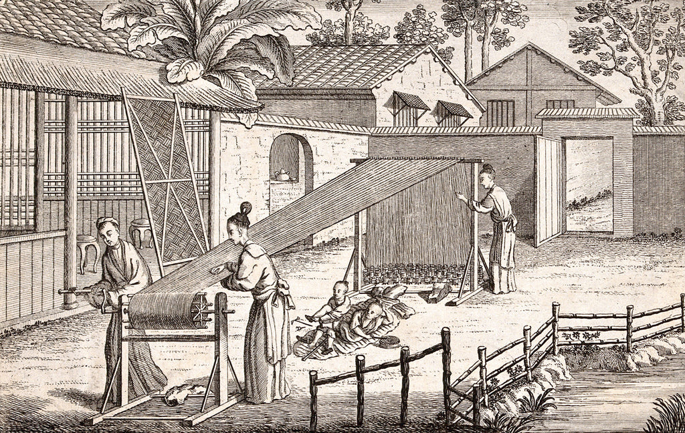

Silk Making and Embroidery
Silk making

With a history of over 5,000 years, silk-making is a complicated process which includes planting mulberry, raising silkworms, unreeling silk, making thread, designing and weaving fabric, and dyeing. This technique spread all over China from as early as the 11th century BC and then to other countries, which contributed to the development of the well-known Silk Road. Sericulture and silk craftsmanship were added to the UNESCO Representative List of the Intangible Cultural Heritage of Humanity in 2009.
Silk Embroidery
Silk embroidery began to boom after the opening of the Silk Road. There are four main schools of Chinese silk embroidery: Su Embroidery, Shu Embroidery, Xiang Embroidery, and Yue Embroidery. Watch this video to learn more about them!